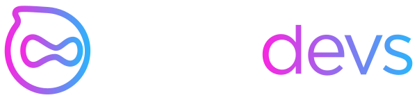

Drop-in replacement
Swap in, no code changes
Point your package manager at the NES registry and rebuild.
- Same version line and public API
- No application code changes
- No CI pipeline changes
HeroDevs Never-Ending Support (NES) replaces the end-of-life (EOL) open source you already run with CVE-free drop-in versions, so you keep getting security patches without changing your code. Allyworks is the Authorized Distributor of HeroDevs in Korea.

Authorized Distributor in Korea · Allyworks“End of life doesn't have to mean end of support.” — HeroDevs
Once an open-source project reaches EOL, security patches stop. But the business systems built on it still have to run tomorrow.
New vulnerabilities keep being disclosed after EOL, but no official patches follow. The risk builds up not only in the libraries you use directly but deep in your transitive dependencies.
Unsupported software is an easy finding in security audits and regulatory reviews, and it's hard to show what you've done about it.
Major version upgrades mean extensive code changes and regression testing. Rushing them to beat a deadline only raises the risk of outages and the cost.
HeroDevs customers
of the Fortune 100 are customers
CVEs and vulnerabilities fixed
NES package downloads
* Based on HeroDevs' published materials (checked November 2026); these are not Allyworks' results in Korea.
NES is commercial security support that lasts for as long as you depend on a given EOL framework. HeroDevs engineers build and verify patches under an SLA and deliver them as CVE-free replacements for the version you already use.
Point your package manager at the NES registry and rebuild.
Each time a CVE is found and fixed in a supported version, a new NES release ships. According to HeroDevs, fixes have typically arrived within hours of disclosure.
Your subscription includes expert support and an enterprise SLA, not just patches.
It's neither on-premises software nor SaaS, so there's no separate runtime environment to run.
“Engineers build the fix.
AI finds the work.”
HeroDevs engineers, including original framework authors and core contributors, write and review every patch. NES for Vue 2, AngularJS, and .NET is built and maintained by core team members of those projects (per HeroDevs).
AI handles vulnerability detection, triage, and regression test runs, so engineers can focus on the fixes.
* Based on HeroDevs' published materials. Detailed SLA and license terms follow HeroDevs' contract documents.
Frameworks and runtimes, plus the libraries and tools around them. Check whether the versions you run today are on the list.
The full Spring portfolio, plus servers, messaging, logging, data-access libraries, and JDBC drivers.
Pair it with Azul for the Java runtimeSpring
Servers · frameworks
Messaging · data · libraries
JDBC drivers
Flagship EOL frameworks such as AngularJS and Vue 2, plus their ecosystem libraries and build tools.
Frameworks
UI · ecosystem libraries
Build · test tools
EOL Node.js runtimes and server-side frameworks. NES for Node.js is endorsed by the OpenJS Foundation (per HeroDevs).
Runtime · server frameworks
Drupal 7, which reached official EOL on January 5, 2025, plus EOL PHP versions and Moodle.
CMS · LMS · language
.NET versions that have reached or are nearing end of support, plus desktop and data frameworks.
Runtime · frameworks
Coverage across the stack, from web frameworks to databases and web servers.
Python · Ruby
Databases · infrastructure
* Based on HeroDevs' published materials as of November 2026. Items with a bold border are HeroDevs' flagship products. Supported technologies and versions are added and changed often; check the HeroDevs website or ask Allyworks for the latest list.
Latest HeroDevs coverage listBecause NES keeps the same version line and public API, there's no need to change your application code or your CI pipeline.
A free EOL scan and the EOL Dataset identify which of your dependencies, and which versions, are no longer supported.
Point package managers such as npm and Maven at the HeroDevs NES registry.
Build and deploy as usual. NES builds on the same version line replace your existing packages.
Each time a new CVE is fixed, you receive an NES release, a VEX document, and a signed attestation, with support under the SLA.
Illustrative example. The registry address and actual setup follow the guides HeroDevs provides (npm · Maven, Nexus · Artifactory, and more).
Where NES supports specific frameworks, the Evergreen Platform handles every EOL dependency your application relies on, repository by repository. Free tools to find out what's EOL come with it.
Install it with a GitHub App and a single GitHub Actions workflow, and it scans your repositories continuously. When a CVE hits an unsupported package, it opens a pull request that swaps in a secure replacement.
At launch, Evergreen supports only the npm ecosystem, with other ecosystems to follow (per HeroDevs). It complements your existing SCA scanner rather than replacing it.
HeroDevs' proprietary dataset tracking more than 19 million (19M+) packages and versions, down to transitive dependencies.
A free EOL scan to see what's EOL in your stack first. Allyworks helps you interpret the results and scope what needs to be covered.
A command-line tool for the EOL Dataset. Check your EOL status from development environments and pipelines.
More HeroDevs resources
Find it. Fix it. Stay compliant. It doesn't stop at finding and fixing vulnerabilities; every fix comes with documentation that proves it.
HeroDevs holds SOC 2 Type 2 certification verified by AssuranceLab, meaning a third party has confirmed its security controls operated effectively over a period of time.
HeroDevs is a CNA that can assign CVE IDs directly. Its vulnerability disclosure and management processes run on that standing.
Every fix ships with a VEX document and a signed legal attestation, giving you evidence ready for audits and reporting.
With evidence such as VEX documents and attestations, HeroDevs helps customers meet and report on the requirements of the regulations and frameworks below.
* These are areas where HeroDevs supports customers' compliance efforts; they do not mean HeroDevs holds the corresponding certification or authorization.
NES versions aren't in public registries, so some scanners may flag them as vulnerable. HeroDevs shares CVE resolution data with scanner vendors such as Mend.io.
A founding member of the OpenJS Foundation Ecosystem Sustainability Program (ESP) and a Gold Member. HeroDevs states that NES for Node.js is the only EOL Node.js support endorsed by the OpenJS Foundation.
A Drupal Association Certified Platinum Partner and the first Drupal Extended Security Support Partner, providing security support for Drupal 7 after EOL.
“We have partnered with industry experts to provide Extended LTS for Vue 2.”
* Partnership and certification details are based on HeroDevs' published materials.
EOL risk in Java applications comes from two layers. Azul Platform Core and Prime cover the JDK runtime; HeroDevs NES covers the frameworks and libraries above it, such as Spring. As the Authorized Distributor in Korea for both companies, Allyworks is one place to plan EOL coverage for your entire stack.

Azul is listed among HeroDevs' partners, and the two companies run a joint “Better Together for Secure Open Source” page.
As the Authorized Distributor in Korea, we work with you directly — from the first conversation through contract and technical support.
Together we map out the EOL technologies and versions you use, your operating environment, and your upgrade plans.
A free EOL scan and other checks identify the technologies to cover and define the scope.
We provide a tailored quote, and you validate NES in your real environment first with a free trial version.
We help you switch registries and roll out, then handle patches, renewals, and technical questions locally.
It doesn't need to be exact. Tell us what you know, and we'll fill in the rest together through scanning and assessment.
Have another question? Contact Allyworks directly, and we'll answer for your environment.
Contact usIt means an open-source project or a specific version has reached the end of official support. After EOL, neither the community nor the original maintainers release security patches, even when new vulnerabilities are found. Drupal 7, for example, reached official EOL on January 5, 2025.
No. NES is a drop-in replacement that keeps the same version line and public API you already use, so there's no need to change your application code or CI pipeline. Point package managers such as npm and Maven at the HeroDevs NES registry and rebuild (guides for Nexus and Artifactory are provided).
A wide range: the Java ecosystem, including Spring, Struts, and Tomcat; frontend technologies such as AngularJS, Angular, Vue 2, Bootstrap, and jQuery; Node.js; Drupal 7 and PHP; .NET; Django and Rails; PostgreSQL; and more. See supported technologies above for the full list by version. The list changes often, so Allyworks will confirm current support before you adopt.
HeroDevs prices each customer's environment individually and bills annually; multi-year contracts are also available. There are no per-environment (per-server) fees. Licenses are based on users who commit code, aren't tied to named individuals, and are transferable.
NES licenses are perpetual, so after your contract ends you can keep using the latest version available at that point. Source code is included, and there's no telemetry or license server. A free trial version is available, as are discounts for nonprofit and educational institutions. For an exact quote, please contact Allyworks.
Major version upgrades require extensive code changes and regression testing, which takes significant time and money. NES doesn't mean giving up on upgrading; it keeps security patches and compliance evidence in place while you prepare, so you're not racing a deadline. For legacy systems where an upgrade no longer makes sense, you can stay supported for as long as you depend on them.
Azul provides the Java runtime (JDK): Azul Platform Core is a TCK-certified OpenJDK, and Platform Prime is a high-performance JVM. HeroDevs NES doesn't provide a JDK. It supports the frameworks and libraries that run on top of it, such as Spring, as well as EOL open source in other ecosystems, including JavaScript, PHP, and .NET.
The two don't overlap; they complement each other. As the Authorized Distributor in Korea for both companies, Allyworks can advise on your entire Java stack.
Because NES versions aren't in public registries, some scanners may treat them as the original version and raise a warning. HeroDevs shares CVE resolution data with scanner vendors such as Mend.io and provides a VEX document with every fix so you can confirm the actual impact.
Tell us which technologies and versions you run, and Allyworks will confirm whether HeroDevs NES applies and send you a tailored quote.